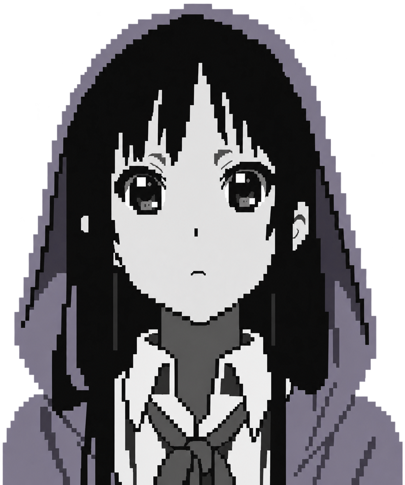

안녕하세요, 도토리입니다!
도토리의 방과후 티타임
처음이라 조금 어색하지만 편하게 인사해 주세요!
About Me
디지털콘텐츠학과 2학년 · 22세 남성
처음에는 조용하지만 친해지면 이야기를 많이 해요.
Campus Goals
다양한 사람을 만나고 팀 프로젝트 경험을 쌓고 싶어요.
Things I Like
Hobbies
Interests
Favorite Food · 돈가스와 떡볶이

도토리의 방과후 티타임
처음이라 조금 어색하지만 편하게 인사해 주세요!
디지털콘텐츠학과 2학년 · 22세 남성
처음에는 조용하지만 친해지면 이야기를 많이 해요.
Campus Goals
다양한 사람을 만나고 팀 프로젝트 경험을 쌓고 싶어요.
Favorite Food · 돈가스와 떡볶이
